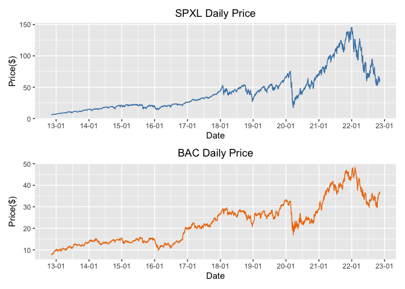
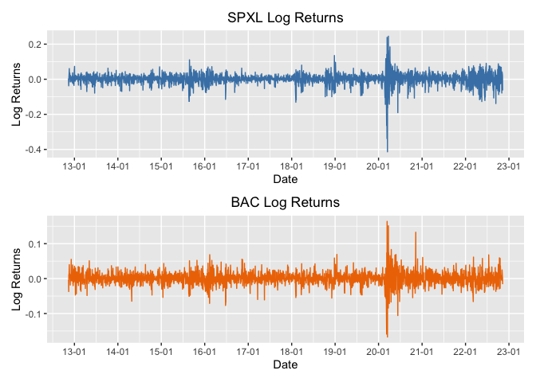
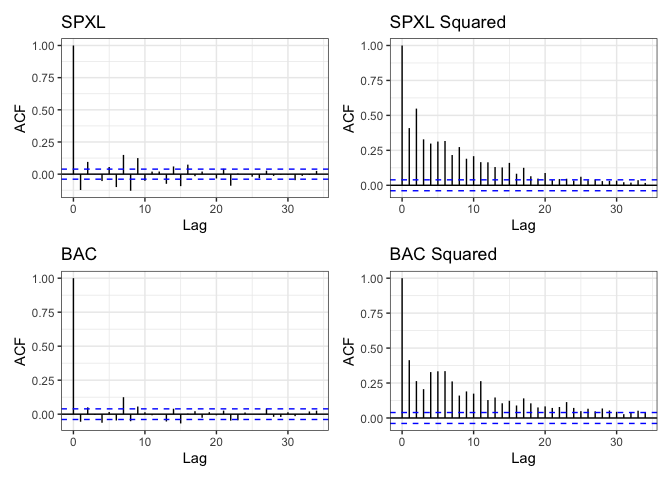
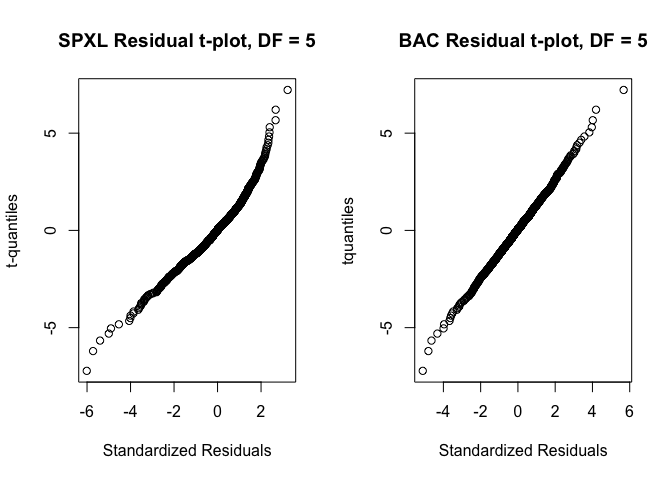
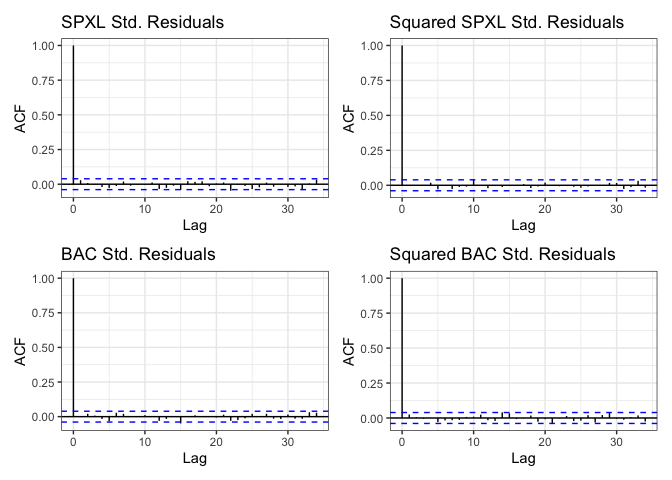

Financial Econometrics Final Project
Viraj Chordiya 2022-11-30
Introduction
In todays volatile world, portfolio management is crucial as it helps reduce the investment strategy risk to the extent that cannot be ignored. The goal of a portfolio manager is to reduce risks and maximize returns for their clients. The aim of this project is to analyse the Direxion Daily S&P 500 Bull 3X Shares (SPXL) ETF and Bank of America Corp (NYSE: BAC) stock and study an optimal portfolio to forecast Value-at-Risk. Direxion Daily S&P 500 Bull 3X Shares is a 300% leveraged ETF derived from the S&P 500 index and Bank of America is an evergreen stock generating steady returns. An optimum portfolio mix of these two financial assets can reduce VaR and provide handsome returns. We collect previous 10 year daily OHLC data for both the instruments from Yahoo Finance using quantmod::getSymbols() in R.
To this end, we perform the following analyses:
- Explore the data to check for time dependence and volatility clustering.
- Build a time series model, specifically, \(AR(1) + GARCH(1,1)\) to model each product’s log returns.
- Fit t-distributions to the standardized errors of both models. In order to study the dependence structure of both the residues, we fit several copulas like t - Copula, Gaussian copula, Gumbel Copula, Clayton and Frank copulas and choose the best one by minimizing AIC.
- We conduct a residual analysis on the standardized residues of the model to check for any serial correlation. Using autocorrelation plots and weighted versions of Ljung-Box test, we conclude that the \(AR(1) + GARCH(1,1)\) model is a good fit for the data.
- Lastly, we utilize numerical methods to conduct Value-at-Risk forecasting of a portfolio mix of SPXL and BAC. We find that VaR increases as SPXL’s share in the portfolio increases.
Data
We collect ten years daily OHLC data of Direxion Daily S&P 500 Bull 3X Shares (SPXL) and Bank of America Corp (NYSE: BAC). SPXL is a three times leveraged ETF mirroring the S&P 500 index. Hence, it provides a 300% of the S&P 500 index’s daily return. The data is collected from Yahoo finance for period 2012/11 - 2022/11 using the getSymbol() function from the quantmod library. The table represents the summary statistics of daily adjusted closing stock price, and log returns of both the instruments.
| vars | n | mean | sd | skew | kurtosis | se | |
| SPXL | 1 | 2,517 | 43.071 | 31.680 | 1.240 | 0.854 | 0.631 |
| BAC | 2 | 2,517 | 22.633 | 9.738 | 0.591 | -0.556 | 0.194 |
| SPXL_r | 3 | 2,517 | 0.001 | 0.033 | -1.525 | 20.383 | 0.001 |
| BAC_r | 4 | 2,517 | 0.001 | 0.019 | -0.070 | 9.849 | 0.0004 |
There are a total of 2517 observations in total. Prices and log returns of both the financial instruments are asymmetric. SPXL daily prices are extremely skewed to the right, while SPXL returns are extremely skewed to the left. Moreover, BAC daily prices are slightly skewed to the right while the returns are slightly skewed to the left. The excess kurtosis for the log returns of both assets show that returns are not normally distributed.
Time series graphs and distribution plots

Exploratory Data Analysis
Firstly, we check for weak stationarity by investigating the time series plots of log returns of both the financial instruments. Next, we conduct the Augmented Dickey Fuller (ADF) test to check for the presence of unit root.

##
## Augmented Dickey-Fuller Test
##
## data: daily_df$SPXL_r
## Dickey-Fuller = -13.314, Lag order = 13, p-value = 0.01
## alternative hypothesis: stationary
##
## Augmented Dickey-Fuller Test
##
## data: daily_df$BAC_r
## Dickey-Fuller = -12.962, Lag order = 13, p-value = 0.01
## alternative hypothesis: stationaryUpon visual inspection, it looks like both the log returns are stationary. Moreover, from the ADF test, we fail to reject the null hypothesis of non-stationarity at 1% confidence.
In order to look for time dependency and volatility clustering of log returns of SPLX and BAC, From the graphs, it is evident that both series display time varying volatility. Moreover, volatility clusters together. For better analysis, we need to model the nonconstant volatility.

From the log return graphs, it is evident that both series display time varying volatility. Moreover, ACF plots of squared series of both stocks show significant serial correlation. For better analysis, we need to model time dependence and non-constant volatility.
Time Series Model
AR(1)-GARCH(1,1) Model
In order to model autocorelation and volatility clustering, we combine an AR(1) model that has a nonconstant conditional mean but a constant conditional variance with a GARCH(1,1) model that has conditional mean and the variance of data depends on the past. Additionally, in a GARCH model, conditional standard deviation exhibits more persistent periods of low and high volatility.
The \(AR(1) - GARCH(1,1)\) is model is as follows:
\[ X_t = \mu + \phi X_{t-1} + e_t, \quad e_t = \sigma_{t}\varepsilon_{t}, \quad \sigma^2_t = \omega + \alpha e^2_{t-1} + \beta \sigma^2_{t-1} \] \[ \tilde X_t = \tilde \mu + \tilde \phi \tilde X_{t-1} + \tilde e_t, \quad \tilde e_t = \tilde \sigma_{t}\tilde \varepsilon_{t}, \quad \tilde \sigma^2_t = \tilde \omega + \tilde \alpha \tilde e^2_{t-1} + \tilde \beta \tilde \sigma^2_{t-1} \] where, \(X_t\) is the daily log returns of SPXL and \(\tilde X_t\) is the daily log returns of BAC.
spxl <- as.vector(daily_df$SPXL_r)
bac <- as.vector(daily_df$BAC_r)
# Fitting an AR(1) + GARCH(1,1) Model
spxl_spec <- ugarchspec(mean.model=list(armaOrder=c(1,0)),
variance.model=list(garchOrder=c(1,1)))
spxl_fit <- ugarchfit(spxl_spec, data = spxl)
bac_spec <- ugarchspec(mean.model=list(armaOrder=c(1,0)),
variance.model=list(garchOrder=c(1,1)))
bac_fit <- ugarchfit(bac_spec, data = bac)Residual Copula Modelling
In order to work with a portfolio of Direxion Daily S&P 500 Bull 3X Shares (SPXL) and Bank of America Corp (BAC), we need to model both the series as a copula to extract the dependence structure between the two financial instruments. In the project, we particulary study the dependent structure of the standardized residuals of an \(AR(1) - GARCH(1,1)\) model fitted to both the series.
First, we fit a Student t distribution to both \(\varepsilon_t\) and \(\tilde \varepsilon_t\) using the fitdistr() function from the MASS library.

A t-distribution with df = 5 fits well to the SPXL and BAC residuals. The qqplot for both the instruments is a straight line except for a few outliers. Given that the total number of observations (n = 2517) is high enough, the outliers are a small fraction of the sample.
Second, we transform the residuals into marginal t - distributions and fit t-copula, Gaussian copula, Gumbel Copula, Clayton and Frank copulas. We select the best fit copula by minimizing AIC. We select t-copula as it minimizes AIC.
# Fit t-Copula
Ct <- fitCopula(copula = tCopula(dim = 2), data = U_hat,
method = "ml", start = c(omega, 10))
# Log-Likelihood
log_lik_t <- loglikCopula(param = Ct@estimate, u = U_hat,
copula = tCopula(dim = 2))
aic_t <- (2 * length(Ct@estimate)) - (2 * abs(log_lik_t))
aic_t## [1] -1516.137# Gaussian Copula
Cgauss <- fitCopula(copula = normalCopula(dim = 2), data = U_hat,
method = "ml", start=c(omega))
log_lik_gauss <- loglikCopula(param = Cgauss@estimate, u = U_hat,
copula = normalCopula(dim = 2))
aic_gauss <- (2 * length(Cgauss@estimate)) - (2 *abs(log_lik_gauss))
aic_gauss## [1] -1411.645# Gumbel Copula
C_gumbel <- fitCopula(copula = gumbelCopula(dim = 2), data =U_hat,
method = "ml")
log_lik_gumbel <- loglikCopula(param = C_gumbel@estimate, u = U_hat,
copula = gumbelCopula(dim = 2))
aic_gumbel <- (2 * length(C_gumbel@estimate)) -(2*abs(log_lik_gumbel))
aic_gumbel## [1] -1388.311# Clayton Copula
C_clayton <- fitCopula(copula = claytonCopula(dim = 2), data = U_hat,
method = "ml")
log_lik_clayton <- loglikCopula(param = C_clayton@estimate, u = U_hat,
copula = claytonCopula(dim = 2))
aic_clayton <- (2 * length(C_clayton@estimate)) -(2*abs(log_lik_clayton))
aic_clayton## [1] -1213.366# Frank Copula
Cfrank <- fitCopula(copula = frankCopula(1, dim = 2), data = U_hat,
method = "ml")
log_lik_frank <- loglikCopula(param = Cfrank@estimate, u = U_hat,
copula = frankCopula(dim = 2))
aic_frank <- (2 * length(Cfrank@estimate)) - (2 *abs(log_lik_frank))
aic_frank## [1] -1395.349Residual Analysis
We conduct a residual analysis on the standardized residuals \(\varepsilon_t\) and \(\tilde \varepsilon\) to check the fit of the \(AR(1) + GARCH(1,1)\) model.
First, we inspect the standardized residuals and squared standardized residuals for autocorrelation. The figure below plots the acf() function for the four series.

The AR(1) + GARCH(1,1) model fits very well to SPXL and BAC. The standardized residuals and the squared standardized residuals of both the models show no significant serial correlation at 95% confidence.
Next we look at the following box tests to check autocorrelation
##
## *---------------------------------*
## * GARCH Model Fit *
## *---------------------------------*
##
## Conditional Variance Dynamics
## -----------------------------------
## GARCH Model : sGARCH(1,1)
## Mean Model : ARFIMA(1,0,0)
## Distribution : norm
##
## Optimal Parameters
## ------------------------------------
## Estimate Std. Error t value Pr(>|t|)
## mu 0.002425 0.000386 6.2772 0.000000
## ar1 -0.057589 0.022519 -2.5574 0.010546
## omega 0.000039 0.000005 7.2770 0.000000
## alpha1 0.234808 0.023532 9.9784 0.000000
## beta1 0.735769 0.021293 34.5548 0.000000
##
## Robust Standard Errors:
## Estimate Std. Error t value Pr(>|t|)
## mu 0.002425 0.000393 6.1642 0.000000
## ar1 -0.057589 0.020538 -2.8040 0.005047
## omega 0.000039 0.000008 4.7663 0.000002
## alpha1 0.234808 0.035230 6.6651 0.000000
## beta1 0.735769 0.030382 24.2170 0.000000
##
## LogLikelihood : 5725.412
##
## Information Criteria
## ------------------------------------
##
## Akaike -4.5454
## Bayes -4.5338
## Shibata -4.5454
## Hannan-Quinn -4.5412
##
## Weighted Ljung-Box Test on Standardized Residuals
## ------------------------------------
## statistic p-value
## Lag[1] 2.049 0.1523
## Lag[2*(p+q)+(p+q)-1][2] 2.124 0.1746
## Lag[4*(p+q)+(p+q)-1][5] 2.964 0.4404
## d.o.f=1
## H0 : No serial correlation
##
## Weighted Ljung-Box Test on Standardized Squared Residuals
## ------------------------------------
## statistic p-value
## Lag[1] 0.004478 0.9466
## Lag[2*(p+q)+(p+q)-1][5] 0.755362 0.9121
## Lag[4*(p+q)+(p+q)-1][9] 2.391429 0.8535
## d.o.f=2
##
## Weighted ARCH LM Tests
## ------------------------------------
## Statistic Shape Scale P-Value
## ARCH Lag[3] 0.0006976 0.500 2.000 0.9789
## ARCH Lag[5] 1.8924782 1.440 1.667 0.4955
## ARCH Lag[7] 2.9168548 2.315 1.543 0.5294
##
## Nyblom stability test
## ------------------------------------
## Joint Statistic: 1.4921
## Individual Statistics:
## mu 0.06813
## ar1 0.03829
## omega 0.25550
## alpha1 0.74941
## beta1 0.80377
##
## Asymptotic Critical Values (10% 5% 1%)
## Joint Statistic: 1.28 1.47 1.88
## Individual Statistic: 0.35 0.47 0.75
##
## Sign Bias Test
## ------------------------------------
## t-value prob sig
## Sign Bias 3.751292 0.0001799 ***
## Negative Sign Bias 0.946993 0.3437337
## Positive Sign Bias 0.004987 0.9960215
## Joint Effect 20.723665 0.0001201 ***
##
##
## Adjusted Pearson Goodness-of-Fit Test:
## ------------------------------------
## group statistic p-value(g-1)
## 1 20 132.0 6.129e-19
## 2 30 157.1 1.510e-19
## 3 40 178.8 8.634e-20
## 4 50 187.7 4.062e-18
##
##
## Elapsed time : 0.2461309
##
## *---------------------------------*
## * GARCH Model Fit *
## *---------------------------------*
##
## Conditional Variance Dynamics
## -----------------------------------
## GARCH Model : sGARCH(1,1)
## Mean Model : ARFIMA(1,0,0)
## Distribution : norm
##
## Optimal Parameters
## ------------------------------------
## Estimate Std. Error t value Pr(>|t|)
## mu 0.001034 0.000323 3.2024 0.001363
## ar1 0.032518 0.021631 1.5033 0.132759
## omega 0.000018 0.000004 4.2020 0.000026
## alpha1 0.105469 0.015992 6.5952 0.000000
## beta1 0.837324 0.026363 31.7608 0.000000
##
## Robust Standard Errors:
## Estimate Std. Error t value Pr(>|t|)
## mu 0.001034 0.000313 3.3035 0.000955
## ar1 0.032518 0.020844 1.5601 0.118735
## omega 0.000018 0.000007 2.5282 0.011463
## alpha1 0.105469 0.033067 3.1896 0.001425
## beta1 0.837324 0.048064 17.4209 0.000000
##
## LogLikelihood : 6693.437
##
## Information Criteria
## ------------------------------------
##
## Akaike -5.3146
## Bayes -5.3030
## Shibata -5.3146
## Hannan-Quinn -5.3104
##
## Weighted Ljung-Box Test on Standardized Residuals
## ------------------------------------
## statistic p-value
## Lag[1] 0.02465 0.8752
## Lag[2*(p+q)+(p+q)-1][2] 0.56007 0.9483
## Lag[4*(p+q)+(p+q)-1][5] 1.75866 0.7794
## d.o.f=1
## H0 : No serial correlation
##
## Weighted Ljung-Box Test on Standardized Squared Residuals
## ------------------------------------
## statistic p-value
## Lag[1] 1.550 0.2131
## Lag[2*(p+q)+(p+q)-1][5] 2.058 0.6047
## Lag[4*(p+q)+(p+q)-1][9] 3.474 0.6789
## d.o.f=2
##
## Weighted ARCH LM Tests
## ------------------------------------
## Statistic Shape Scale P-Value
## ARCH Lag[3] 0.06872 0.500 2.000 0.7932
## ARCH Lag[5] 1.27766 1.440 1.667 0.6527
## ARCH Lag[7] 2.21880 2.315 1.543 0.6710
##
## Nyblom stability test
## ------------------------------------
## Joint Statistic: 0.8989
## Individual Statistics:
## mu 0.02392
## ar1 0.02142
## omega 0.24816
## alpha1 0.57065
## beta1 0.34992
##
## Asymptotic Critical Values (10% 5% 1%)
## Joint Statistic: 1.28 1.47 1.88
## Individual Statistic: 0.35 0.47 0.75
##
## Sign Bias Test
## ------------------------------------
## t-value prob sig
## Sign Bias 0.3415 0.732730
## Negative Sign Bias 3.0886 0.002033 ***
## Positive Sign Bias 0.5374 0.591062
## Joint Effect 17.9994 0.000440 ***
##
##
## Adjusted Pearson Goodness-of-Fit Test:
## ------------------------------------
## group statistic p-value(g-1)
## 1 20 77.00 6.080e-09
## 2 30 90.07 3.554e-08
## 3 40 105.79 4.458e-08
## 4 50 114.09 4.159e-07
##
##
## Elapsed time : 0.211097The weighted versions of the Ljung-Box test and their p-values all indicate that the estimated \(AR(1) + GARCH(1,1)\) model for the conditional mean and variance is adequate for removing serial correlation from the series and squared series.
Applications to Portfolio Risk Management
In this section, we apply the \(AR(1) + GARCH(1,1)\) along with t-Copula residuals to forecast one-step ahead Value-at-Risk at 99% level on the following portfolio consisting of SPXL and BAC with weight \(\rho\):
\[\rho X_{n + 1} + (1-\rho) \tilde X_{n+1}\]
where, \(\rho = \{0.1, 0.2, 0.3, 0.4, 0.5, 0.6, 0.7, 0.8, 0.9\}\)
To forecast VaR, we solve the following equation:
\[0.99 = P(\rho X_{n + 1} + (1-\rho) \tilde X_{n+1} \leq x | \mathcal{F})\] \[0.99 = P(\rho(\mu + \phi X_{n} + \sigma_{n+1}\varepsilon_{n+1}) + (1-\rho) (\tilde\mu + \tilde\phi \tilde X_{n} + \tilde \sigma_{n+1} \tilde \varepsilon_{n+1}) \leq x | \mathcal{F})\]
Initially, we forecast one step ahead \(\sigma_{n+1}\) and \(\tilde \sigma_{n + 1}\) using the ugarchforecast() function. At this point, we have estimated all the unknowns in the \(AR(1) + GARCH(1,1)\) model. In order to solve the above equation numerically, we draw a random sample of size \(b = 10000\) from the fitted t-Copula and make transformations to get \(\varepsilon_i\) and \(\tilde \varepsilon_i\), \(i = 1, \dots, b\) Lastly, we calculate VaR at 99% by calculating the 99th quantile of the following sample
\[\big{\{}\rho(\mu + \phi X_{n} + \sigma_{n+1}\varepsilon_{i}) + (1-\rho) (\tilde\mu + \tilde\phi \tilde X_{n} + \tilde \sigma_{n+1} \tilde \varepsilon_{i})\big{\}}_{i = 1}^b\] In order to see how risk depends on share of portfolio \(\rho\), we conduct the empirical activity for \(\rho = 0.1, \dots, 0.9\).
# Copula Simulation
b <- 10000
rho = Ct@estimate[1]
df = Ct@estimate[2]
simulate <- rCopula(b, tCopula(dim = 2, rho, df = df))
spxl_marginal <- qt(simulate[, 1], df = spxl_res_t$estimate[3])
bac_marginal <- qt(simulate[, 2], df = bac_res_t$estimate[3])
# dataframe with transformed marginals
sim <- cbind(spxl_marginal, bac_marginal)
# Forecasting sigmas
spxl_pred <- ugarchforecast(spxl_fit, n.ahead = 1)
bac_pred <- ugarchforecast(bac_fit, n.ahead = 1)
spxl_sigma <- sigma(spxl_pred) # sigma_{t + 1}
bac_sigma <- sigma(bac_pred) # sigma_{t + 1}
# Vectorize parameters
s_mu <- rep(as.numeric(spxl_fit@fit$coef[1]), b)
s_ar <- rep(as.numeric(spxl_fit@fit$coef[2]), b)
s_last <- rep(spxl[length(spxl)], b)
s_sd <- rep(spxl_sigma, b)
b_mu <- rep(as.numeric(bac_fit@fit$coef[1]), b)
b_ar <- rep(as.numeric(bac_fit@fit$coef[2]), b)
b_last <- rep(bac[length(bac)], b)
b_sd <- rep(bac_sigma, b)
s <- s_mu + (s_ar * s_last) + (s_sd * sim[, 1])
ba <- b_mu + (b_ar * b_last) + (b_sd * sim[, 2])
pred_sample <- cbind(s, ba)
rhos <- seq(0.1, 0.9, by = 0.1)
var_sample <- data.frame()
alpha <- 0.01 # 99th percentile
portfolio_value <- 1000000
for (i in rhos){
s_rho <- s * rep(i, b)
b_rho <- ba * rep(1 - i, b)
sample <- s_rho + b_rho
q <- as.numeric(quantile(sample, alpha))
VaR <- - portfolio_value * q
var_sample <- rbind(var_sample, VaR)
}
colnames(var_sample) <- c("VaR ($)")
row.names(var_sample) <- c("p = 0.1", "p = 0.2", "p = 0.3", "p = 0.4",
"p = 0.5", "p = 0.6", "p = 0.7", "p = 0.8",
"p = 0.9")
var_sample## VaR ($)
## p = 0.1 60047.89
## p = 0.2 67715.91
## p = 0.3 76620.78
## p = 0.4 87012.86
## p = 0.5 95316.61
## p = 0.6 106135.22
## p = 0.7 116638.79
## p = 0.8 128612.34
## p = 0.9 139554.01The table reports the Value-at-Risk at 99% level for a portfolio value of $1,000,000. It is evident from the table that as SPXL’s proportion in the portfolio increases (\(\rho\)), the Value-at-Risk increases. These results are in line with expectations as Direxion Daily S&P 500 Bull 3X Shares is a 300% leveraged instrument based on the S&P 500 index. When \(\rho = 0.2\), there is a 1% percent chance that the loss would be greater than 6.7715911^{4} the next day on a $1,000,000 investment. Similarly, When \(\rho = 0.9\), there is a 1% percent chance that the loss would be greater than 1.3955401^{5} the next day on a $1,000,000 investment.
Appendix
R code:
# Importing Packages
library(quantmod)
library(xts)
library(gridExtra)
library(MASS)
library(fGarch)
library(sn)
library(copula)
library(ks)
library(stargazer)
library(patchwork)
library(rugarch)
library(psych)
library(ggplot2)
library(tseries)
# Assigning Date
start <- as.Date("2012-11-09")
end <- as.Date("2022-11-10")
spxl_df <- getSymbols("SPXL", from = start, to = end, src = "yahoo",
auto.assign = F)
bac_df <- getSymbols("BAC", from = start, to = end, src = "yahoo",
auto.assign = F)
daily_df <- cbind(spxl_df$SPXL.Adjusted, bac_df$BAC.Adjusted)
colnames(daily_df) <- c("SPXL", "BAC")
daily_df$SPXL_r <- diff(log(daily_df$SPXL))
daily_df$BAC_r <- diff(log(daily_df$BAC))
daily_df <- na.omit(daily_df)
stargazer(describe(daily_df, ranges = F), summary = F, type = "html", title = "Table 1. Summary Statistics")
plot1 <- ggplot(spxl_df, aes(x = Index, y = SPXL.Adjusted))+
geom_line(color = "steelblue") +
ggtitle("SPXL Daily Price") +
xlab("Date") +
ylab("Price($)") +
theme(plot.title = element_text(hjust = 0.5)) +
scale_x_date(date_labels = "%y-%m", date_breaks = "1 year")
plot2 <- ggplot(bac_df, aes(x = Index, y = BAC.Adjusted))+
geom_line(color = "darkorange2") +
ggtitle("BAC Daily Price") +
xlab("Date") +
ylab("Price($)") +
theme(plot.title = element_text(hjust = 0.5)) +
scale_x_date(date_labels = "%y-%m", date_breaks = "1 year")
plot1 / plot2
# Plotting log returns
plot_spxl_r <- ggplot(daily_df, aes(x = Index, y = SPXL_r))+
geom_line(color = "steelblue") +
ggtitle("SPXL Log Returns") +
xlab("Date") +
ylab("Log Returns") +
theme(plot.title = element_text(hjust = 0.5)) +
scale_x_date(date_labels = "%y-%m", date_breaks = "1 year")
plot_bac_r <- ggplot(daily_df, aes(x = Index, y = BAC_r))+
geom_line(color = "darkorange2") +
ggtitle("BAC Log Returns") +
xlab("Date") +
ylab("Log Returns") +
theme(plot.title = element_text(hjust = 0.5)) +
scale_x_date(date_labels = "%y-%m", date_breaks = "1 year")
plot_spxl_r / plot_bac_r
adf.test(daily_df$SPXL_r)
adf.test(daily_df$BAC_r)
# ACF plots
ggacf <- function(x, ci=0.95, type="correlation", xlab="Lag", ylab=NULL,
ylim=NULL, main=NULL, ci.col="blue", lag.max=NULL) {
x <- as.data.frame(x)
x.acf <- acf(x, plot=F, lag.max=lag.max, type=type)
ci.line <- qnorm((1 - ci) / 2) / sqrt(x.acf$n.used)
d.acf <- data.frame(lag=x.acf$lag, acf=x.acf$acf)
g <- ggplot(d.acf, aes(x=lag, y=acf)) +
geom_hline(yintercept=0) +
geom_segment(aes(xend=lag, yend=0)) +
geom_hline(yintercept=ci.line, color=ci.col, linetype="dashed") +
geom_hline(yintercept=-ci.line, color=ci.col, linetype="dashed") +
theme_bw() +
xlab("Lag") +
ggtitle(ifelse(is.null(main), "", main)) +
if (is.null(ylab))
ylab(ifelse(type=="partial", "PACF", "ACF"))
else
ylab(ylab)
g
}
spxl_acf <- ggacf(daily_df$SPXL_r, main = "SPXL")
spxl_acf2 <- ggacf(daily_df$SPXL_r ** 2, main = "SPXL Squared")
bac_acf <- ggacf(daily_df$BAC_r, main = "BAC")
bac_acf2 <- ggacf(daily_df$BAC_r ** 2, main = "BAC Squared")
(spxl_acf + spxl_acf2) / (bac_acf + bac_acf2)
spxl <- as.vector(daily_df$SPXL_r)
bac <- as.vector(daily_df$BAC_r)
# Fitting an AR(1) + GARCH(1,1) Model
spxl_spec <- ugarchspec(mean.model=list(armaOrder=c(1,0)),
variance.model=list(garchOrder=c(1,1)))
spxl_fit <- ugarchfit(spxl_spec, data = spxl)
bac_spec <- ugarchspec(mean.model=list(armaOrder=c(1,0)),
variance.model=list(garchOrder=c(1,1)))
bac_fit <- ugarchfit(bac_spec, data = bac)
# Standardized Residuals
spxl_res <- as.vector(residuals(spxl_fit, standardize = T))
bac_res <- as.vector(residuals(bac_fit, standardize = T))
# Fitting t-distribution
spxl_res_t <- fitdistr(spxl_res, "t")
bac_res_t <- fitdistr(bac_res, "t")
# Fitting t-density plots
par(mfrow = c(1,2))
n <- length(spxl_res)
x1 <- qt((1:n)/(n+1), df = 5)
x2 <- qt((1:n)/(n+1), df = 5)
qqplot(sort(spxl_res), x1, xlab="Standardized Residuals",
ylab="t-quantiles",
main = "SPXL Residual t-plot, DF = 5")
qqplot(sort(bac_res), x2, xlab="Standardized Residuals",
ylab="tquantiles",
main = "BAC Residual t-plot, DF = 5")
# Transform residues into uniform distribution
spxl_uniform <- pt(spxl_res, df = spxl_res_t$estimate[3])
bac_uniform <- pt(bac_res, df = bac_res_t$estimate[3])
U_hat <- cbind(spxl_uniform, bac_uniform)
colnames(U_hat) <- c("SPXL_U", "BAC_U")
tau <- as.numeric(cor.test(spxl_uniform, bac_uniform,
method="kendall")$estimate)
omega <- sin(tau * pi/2)
# Fit t-Copula
Ct <- fitCopula(copula = tCopula(dim = 2), data = U_hat,
method = "ml", start = c(omega, 10))
# Log-Likelihood
log_lik_t <- loglikCopula(param = Ct@estimate, u = U_hat,
copula = tCopula(dim = 2))
aic_t <- (2 * length(Ct@estimate)) - (2 * abs(log_lik_t))
aic_t
# Gaussian Copula
Cgauss <- fitCopula(copula = normalCopula(dim = 2), data = U_hat,
method = "ml", start=c(omega))
log_lik_gauss <- loglikCopula(param = Cgauss@estimate, u = U_hat,
copula = normalCopula(dim = 2))
aic_gauss <- (2 * length(Cgauss@estimate)) - (2 *abs(log_lik_gauss))
aic_gauss
# Gumbel Copula
C_gumbel <- fitCopula(copula = gumbelCopula(dim = 2), data =U_hat,
method = "ml")
log_lik_gumbel <- loglikCopula(param = C_gumbel@estimate, u = U_hat,
copula = gumbelCopula(dim = 2))
aic_gumbel <- (2 * length(C_gumbel@estimate)) -(2*abs(log_lik_gumbel))
aic_gumbel
# Clayton Copula
C_clayton <- fitCopula(copula = claytonCopula(dim = 2), data = U_hat,
method = "ml")
log_lik_clayton <- loglikCopula(param = C_clayton@estimate, u = U_hat,
copula = claytonCopula(dim = 2))
aic_clayton <- (2 * length(C_clayton@estimate)) -(2*abs(log_lik_clayton))
aic_clayton
# Frank Copula
Cfrank <- fitCopula(copula = frankCopula(1, dim = 2), data = U_hat,
method = "ml")
log_lik_frank <- loglikCopula(param = Cfrank@estimate, u = U_hat,
copula = frankCopula(dim = 2))
aic_frank <- (2 * length(Cfrank@estimate)) - (2 *abs(log_lik_frank))
aic_frank
spxl_res_acf <- ggacf(spxl_res, main = "SPXL Std. Residuals")
spxl_res_acf2 <- ggacf(spxl_res ** 2, main = "Squared SPXL Std. Residuals")
bac_res_acf <- ggacf(bac_res, main = "BAC Std. Residuals")
bac_res_acf2 <- ggacf(bac_res ** 2, main = "Squared BAC Std. Residuals")
(spxl_res_acf + spxl_res_acf2) / (bac_res_acf + bac_res_acf2)
show(spxl_fit)
show(bac_fit)
# Copula Simulation
b <- 10000
rho = Ct@estimate[1]
df = Ct@estimate[2]
simulate <- rCopula(b, tCopula(dim = 2, rho, df = df))
spxl_marginal <- qt(simulate[, 1], df = spxl_res_t$estimate[3])
bac_marginal <- qt(simulate[, 2], df = bac_res_t$estimate[3])
# dataframe with transformed marginals
sim <- cbind(spxl_marginal, bac_marginal)
# Forecasting sigmas
spxl_pred <- ugarchforecast(spxl_fit, n.ahead = 1)
bac_pred <- ugarchforecast(bac_fit, n.ahead = 1)
spxl_sigma <- sigma(spxl_pred) # sigma_{t + 1}
bac_sigma <- sigma(bac_pred) # sigma_{t + 1}
# Vectorize parameters
s_mu <- rep(as.numeric(spxl_fit@fit$coef[1]), b)
s_ar <- rep(as.numeric(spxl_fit@fit$coef[2]), b)
s_last <- rep(spxl[length(spxl)], b)
s_sd <- rep(spxl_sigma, b)
b_mu <- rep(as.numeric(bac_fit@fit$coef[1]), b)
b_ar <- rep(as.numeric(bac_fit@fit$coef[2]), b)
b_last <- rep(bac[length(bac)], b)
b_sd <- rep(bac_sigma, b)
s <- s_mu + (s_ar * s_last) + (s_sd * sim[, 1])
ba <- b_mu + (b_ar * b_last) + (b_sd * sim[, 2])
pred_sample <- cbind(s, ba)
rhos <- seq(0.1, 0.9, by = 0.1)
var_sample <- data.frame()
alpha <- 0.01 # 99th percentile
portfolio_value <- 1000000
for (i in rhos){
s_rho <- s * rep(i, b)
b_rho <- ba * rep(1 - i, b)
sample <- s_rho + b_rho
q <- as.numeric(quantile(sample, alpha))
VaR <- - portfolio_value * q
var_sample <- rbind(var_sample, VaR)
}
colnames(var_sample) <- c("VaR ($)")
row.names(var_sample) <- c("p = 0.1", "p = 0.2", "p = 0.3", "p = 0.4",
"p = 0.5", "p = 0.6", "p = 0.7", "p = 0.8",
"p = 0.9")
var_sample